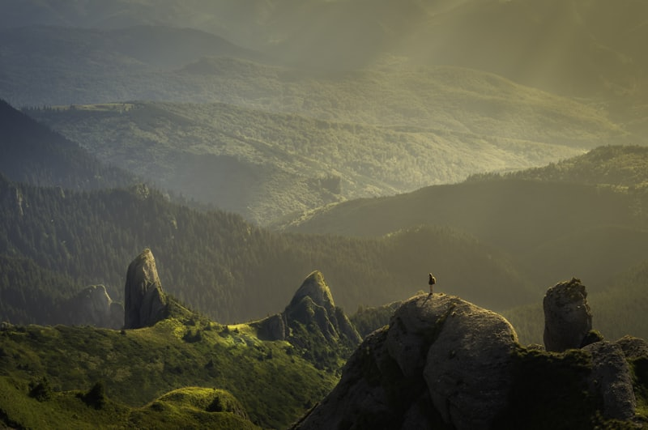
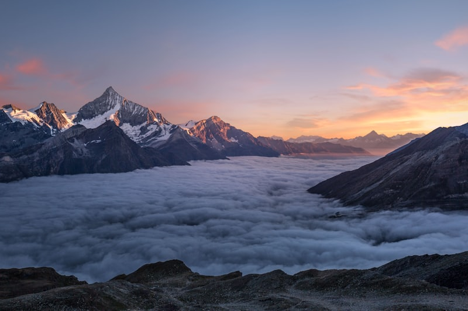

Endógenos
Agentes Internos
Vêm de dentro da Terra. O tectonismo (movimento das placas), o vulcanismo e os terremotos são os grandes criadores das montanhas e das fossas oceânicas.

O relevo é a face da Terra, e o solo é a sua pele. Nesta aula, vamos entender como as forças internas do planeta (como vulcões e terremotos) criam as formas que vemos, e como os agentes externos (como a água e o vento) modelam e desgastam essas formas ao longo de milhões de anos. É como um escultor trabalhando em uma pedra gigante.

A força que levanta as montanhas.

Vêm de dentro da Terra. O tectonismo (movimento das placas), o vulcanismo e os terremotos são os grandes criadores das montanhas e das fossas oceânicas.

Atuam na superfície. A chuva, os rios, os ventos e a própria atividade humana esculpem e desgastam o relevo através da erosão e do intemperismo.
É a camada fértil que sustenta a vida. Formado pela decomposição das rochas, o solo possui "horizontes" (camadas) que nos contam sua história e saúde.
O intemperismo é a quebra da rocha "parada". Ele pode ser físico (mudança de temperatura), químico (ação da água) ou biológico (raízes e bichos). Já a erosão é quando esse material quebrado é levado embora pela água ou pelo vento para outro lugar.
Tremores acontecem quando a pressão entre as placas tectônicas é liberada no hipocentro. O epicentro é onde o choque atinge a superfície. Usamos a Escala Richter para medir essa energia.
O foco real, lá embaixo, onde o choque começa.
O ponto na superfície logo acima do hipocentro.
A Richter mede de tremores sutis (< 2.0) a devastadores (8.0+).
A Terra não cessa sua metamorfose. Agentes Internos (endógenos: vulcanismo, tectonismo) criam o relevo (formas maciças), e os Agentes Externos (exógenos: chuvas, ventos, rios, intemperismo físico/químico) modelam-no incessantemente. No Brasil, classificações de Aziz AbSáber e Jurandyr Ross baseiam-se nos escudos cristalinos, cadeias de bacias sedimentares, caracterizando vastos Planaltos, Depressões resultantes de processos de erosão prolongados (como a Depressão Sertaneja), e Planícies restritas (ex: Planície do Pantanal).
O solo é o único ambiente onde se encontram reunidos em associação íntima os quatros elementos: domínio das rochas ou pedras litosfera; domínio das águas hidrosfera; domínio do ar atmosfera; domínio da vida biosfera. É um complexo vivo elaborado na superfície de contato da crosta terrestre, com seus invólucros: atmosfera, hidrosfera e formado de organismos vegetais e animais que lhes dão a matéria orgânica.
O solo, no dizer de Dokoutchaiev, é um corpo natural completamente diferente do mundo mineral, vegetal e animal, sendo, no entanto, um mundo vivo, pois um solo pode ser jovem (incompleto na sua formação), adulto (bem formado), velho e morto (fóssil). Por causa de sua gênese, sua evolução e suas propriedades, o solo difere dos três reinos da natureza, devendo ser considerado como um quarto reino.
Fonte: GUERRA, Antônio T. Dicionário geológico-geomorfológico. Rio de Janeiro: IBGE, 1980. p. 398.
Sugestões de Leituras BRANCO, Samuel Borges; BRANCO, Fábio Cardinale. A deriva dos continentes. São Paulo: Moderna, 2014.
FRANÇOIS, Michel. A geologia em pequenos passos. São Paulo: IBEP, Nacional, 2006.
Sugestão de Vídeo 10.5 - O dia em que a Terra não aguentou. EUA: NBC, 2004. Duração: 153 min.
Geografia